Exam weight Low
Intended Learning Outcomes
- CLO 1: Evaluate the issues and concerns indicative to protecting information, systems and users.
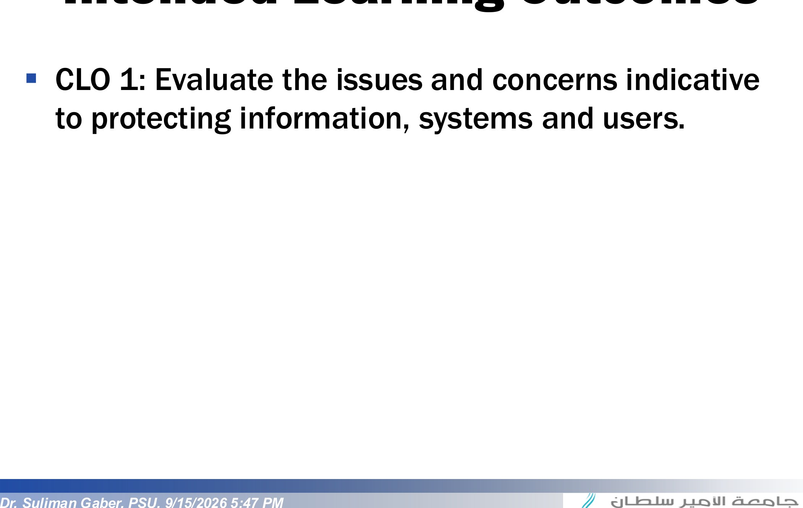
2
Exam weight ●○○ Low
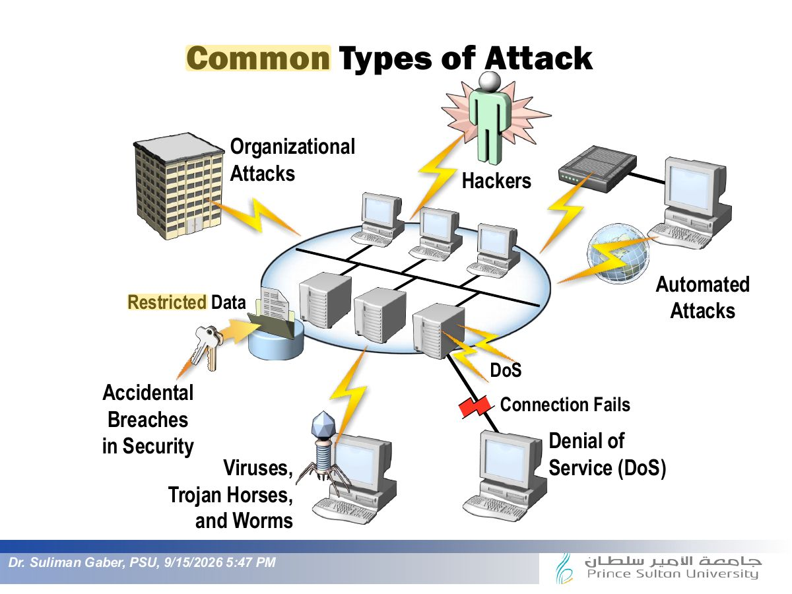
Exam weight ●○○ Low
Introduction
- a key step when managing risks is to first understand and manage the source.
- This includes threats and vulnerabilities, and especially threat /vulnerability pairs.
- Once you understand these elements, it’s much easier to identify mitigation techniques.
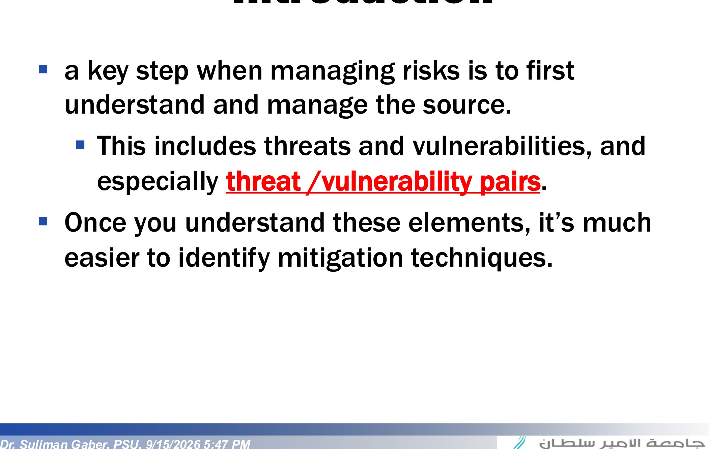
4
Exam weight ●○○ Low
Introduction
- threat is referred as any activity that represents a possible danger.
- This includes any circumstances or events with the potential to adversely impact confidentiality, integrity, or availability of a business’s assets.
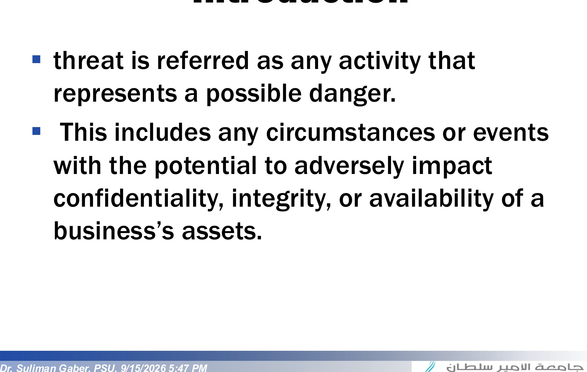
5
Exam weight ●○○ Low
Possible threat sources
7 IT infra. Domains
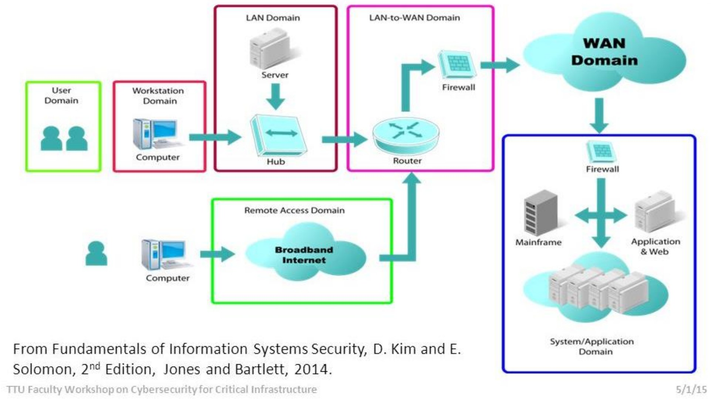
6
Exam weight ●○○ Low
- Threat sources: human (intentional or accidental), natural, environmental, technical.
★ Past exam
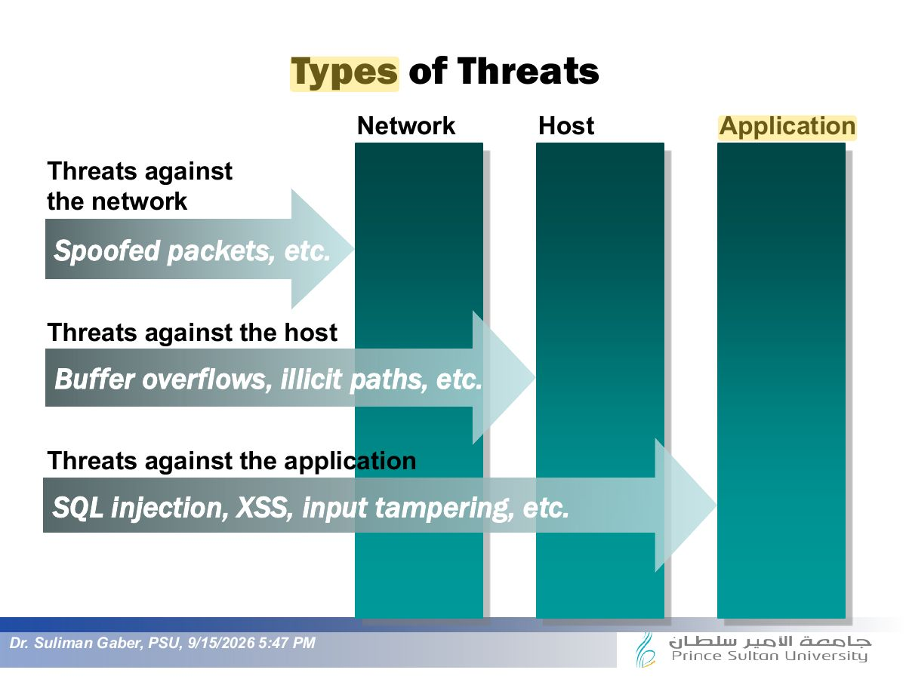
Exam weight ●●● High
- Threat categories by target: network, host, application.
Asked in a real exam
🎯 How this can come up · 1 question
MCQ
SQL injection is a(n) ____ threat.
Correct: Application.
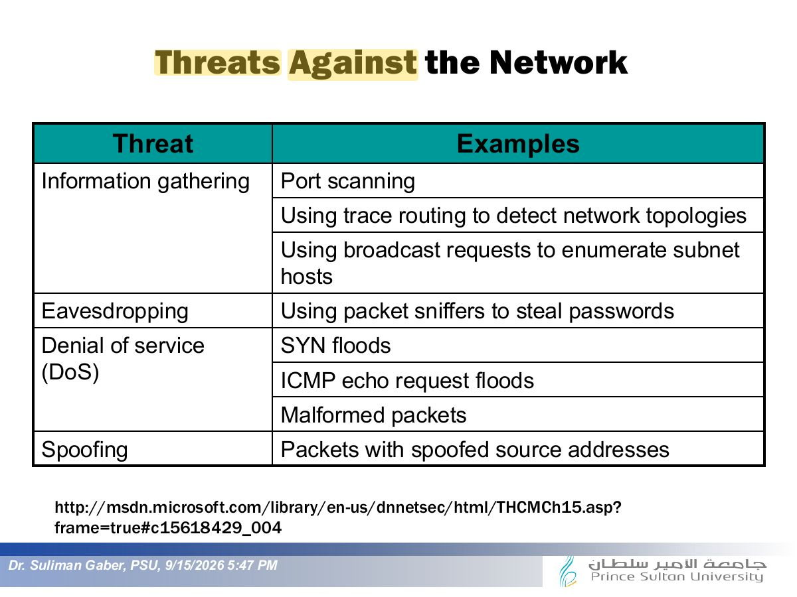
Exam weight ●○○ Low
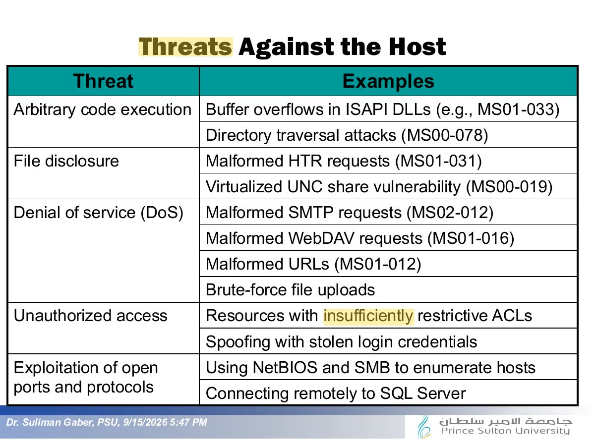
Exam weight ●○○ Low
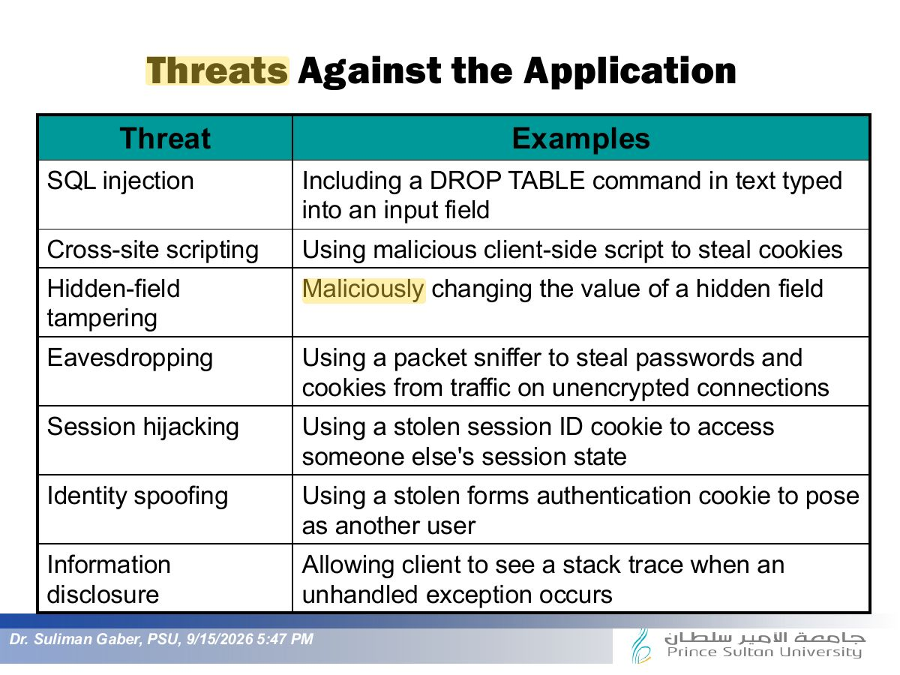
Exam weight ●○○ Low
Components of a Threat
- Threat agents---criminals, terrorists, subversive or secret groups, state sponsored, disgruntled employees,, hackers, pressure groups, commercial groups.
- Threat agent motivators---political, secular, personal gain, religion, power, terrorism, curiosity
- Capability---software, technology, facilities, education and training, methods, books and manuals.
- Threat catalysts---events, technology changes, personal circumstances
- Threat amplifiers---peer pressure, fame, access to information, changing high technology, deskilling through scripting, skills and education levels, law enforcement activity, target vulnerability, target profile, public perception, peer perception
- Threat inhibitors---fear of capture, fear of failure, level of technical difficulty, cost of participation, sensitivity to public perception, law enforcement activity, target vulnerability, target profile, public perception, peer perception
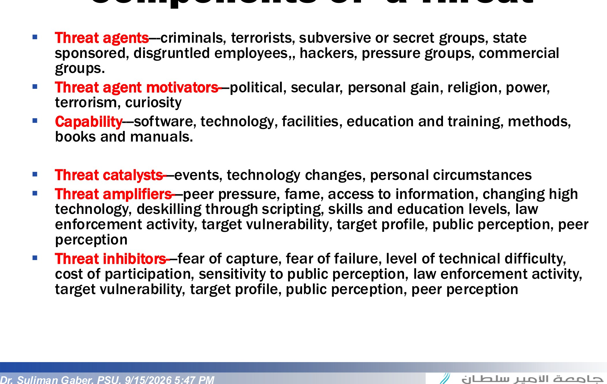
11
Exam weight ●○○ Low
Threat Agents
- Natural---fire, floods, power failure, earthquakes, etc.
- Unintentional---insider, outsider---primarily non-hostile
- Intentional---Insider, outsider---hostile or non-hostile (curious)
- Foreign agents, industrial espionage, terrorists, organized crime, hackers and crackers, insiders, political dissidents, vendors and suppliers
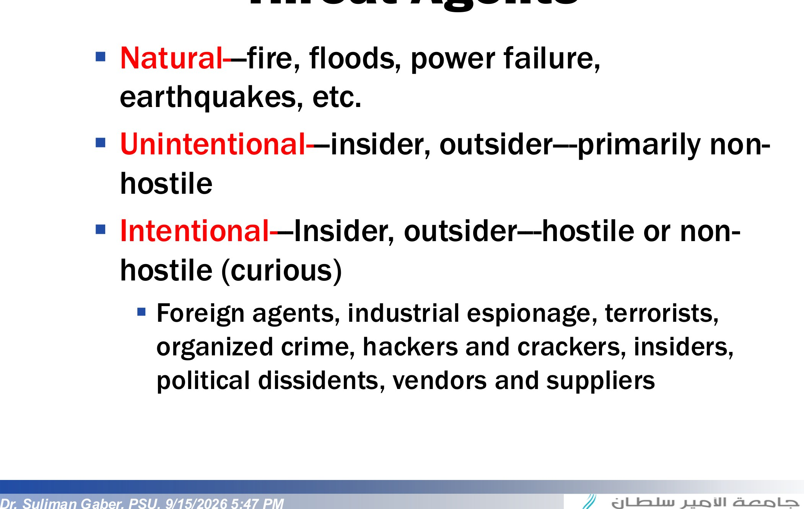
12
Exam weight ●○○ Low
- Threat agent: the actor (hacker, insider, malware) that carries out the threat.
Top ten Database Security Threats
www.schell.com/Top_Ten_Database_Threats.pdf
- Excessive Privilege Abuse- --users are granted database access privileges that exceed the requirements of their job function; e.g., a university administrator whose job requires only the ability to change student contact information may take advantage of excessive database update privileges to change grades
- Legitimate Privilege Abuse ---- Users may abuse legitimate database privileges for unauthorized purposes; e.g. a rogue health worker who is willing to trade patient records for money
- Privilege Elevation- --Attackers may take advantage of database platform software vulnerabilities to convert access privileges from those of an ordinary user to those of an administrator. Vulnerabilities may be found in stored procedures, built-in functions, protocol implementations, and even SQL statements
- Database Platform Vulnerabilities- -- Vulnerabilities in underlying operating systems (Windows 2000,
UNIX, etc.) and additional services installed on a database server may lead to unauthorized access, data corruption, or denial of service.
- SQL Injection- -- a perpetrator typically inserts (or “injects”) unauthorized database statements into a vulnerable SQL data channel. Using SQL injection, attackers may gain unrestricted access to an entire database
- Weak Audit Trail- -- Weak database audit policy represents a serious organizational risk on many levels.--- regulatory risk, deterrence, and detection and recovery
- Denial of Service (DoS)--- access to network applications or data is denied to intended users
- Database Communication Protocol Vulnerabilities--- e.g., Four out of seven security fixes in the two most recent IBM DB2 FixPacks address protocol vulnerabilities; similarly, 11 out of 23 database vulnerabilities fixed in the most recent Oracle quarterly patch relate to protocols
- Weak Authentication- -- allowing attackers to assume the identity of legitimate database users by stealing or otherwise obtaining login credentials
- Backup Data Exposure- -- Backup database storage media is often completely unprotected from attack. As a result, several high profile security breaches have involved theft of database backup tapes and hard disks.
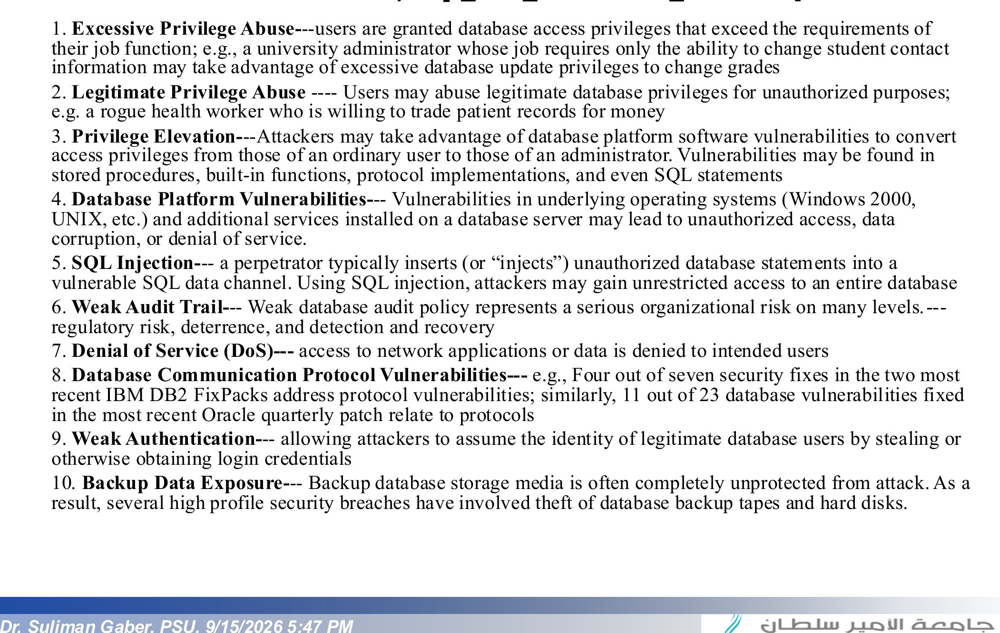
13
Exam weight ●○○ Low
Ten web threats
http://www.darkreading.com/vulnerability/10-web-threats-that-could-harm-your-busi/240150315
- Bigger, Subtler DDoS Attacks- --Distributed Denial of Service Attacks
- Old Browsers, Vulnerable Plug-Ins- --e.g., browser vulnerabilities and, more frequently, the browser plug-ins that handle Oracle's Java and Adobe's Flash and Reader.
- Good Sites Hosting Bad Content ---in VOHO watering hole attack, attackers infected legitimate financial and tech industry websites in Massachusetts and Washington, D.C., commonly accessed by their intended victims
- Mobile Apps And The Unsecured Web- -- bring-your-own-device movement has led to a surge in consumer-owned devices inside corporate firewalls
- Failing To Clean Up Bad Input- --e.g., Since 2010, SQL injection has held the top spot on the Open
Web Application Security Project's list of top 10 security vulnerabilities
- The Hazards Of Digital Certificates- -- a series of hacks against certificate authorities gave attackers the tools they needed to issue fraudulent SSL certificates that could disguise a malicious website as a legitimate
- The Cross-Site Scripting Problem- -- An attacker going after a banking site with a cross-site scripting vulnerability could run a script for a login box on the bank's page and steal users' credentials.
- The Insecure 'Internet Of Things ‘ --- Routers and printers, videoconferencing systems, door locks and other devices are now networked via Internet protocols and even have embedded Web servers. In many cases, the software on these devices is an older version of an open source library.
- Getting In The Front Door- -- Automated Web bots scrape from Web pages information that can give a competitor better intelligence on your business.
- New Technology, Same Problems- -- People click links all day long -- people are pretty trained to think that clicking a link on the Web is safe.
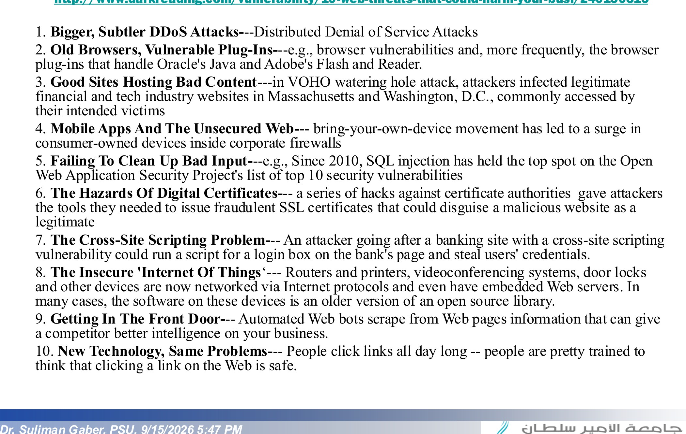
14
Exam weight ●○○ Low
Major Security Threats on Information Systems http://ubiquity.acm.org/article.cfm?id=1117695
- Intrusion or Hacking- --gaining access to a computer system without the knowledge of its owner---Tools: . Poor Implementation of Shopping Carts, Hidden fields in the html forms, Client-side validation scripts, Direct SQL attack, Session Hijacking, Buffer Overflow Forms, Port Scan
- Viruses and Worms- -- programs that make computer systems not to work properly--- Polymorphic Virus, Stealth Virus, Tunneling Virus, Virus Droppers, Cavity Virus
- Trojan Horse- -- These programs are having two components; one runs as a server and another one runs as a client; data integrity attack, steal private information on the target system, store key strokes and make it viewable for hackers, sending private local as an email attachment.
- Spoofing- --fooling other computer users to think that the source of their information is coming from a legitimate user---IP Spoofing, DNS Spoofing, ARP Spoofing
- Sniffing ---used by hackers for scanning login_ids and passwords over the wires. TCPDUmp and Snoop are better examples for sniffing tools.
- Denial of Service- --The main aim of this attack is to bring down the targeted network and make it to deny the service for legitimate users. In order to do DoS attacks, people do not need to be an expert. They can do this attack with simple ping command
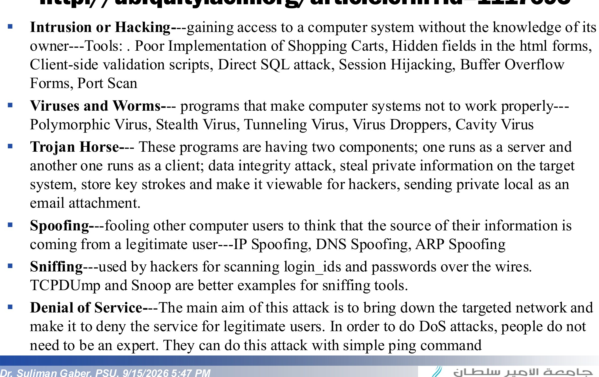
15
Exam weight ●○○ Low
Vulnerabilities
- “Some weakness of a system that could allow security to be allowed.”
- Types of vulnerabilities
- Physical vulnerabilities
- Natural vulnerabilities
- Hardware/software vulnerabilities
- Media vulnerabilities (e.g., stolen/damaged disk/tapes)
- Emanation vulnerabilities---due to radiation
- Communication vulnerabilities
- Human vulnerabilities
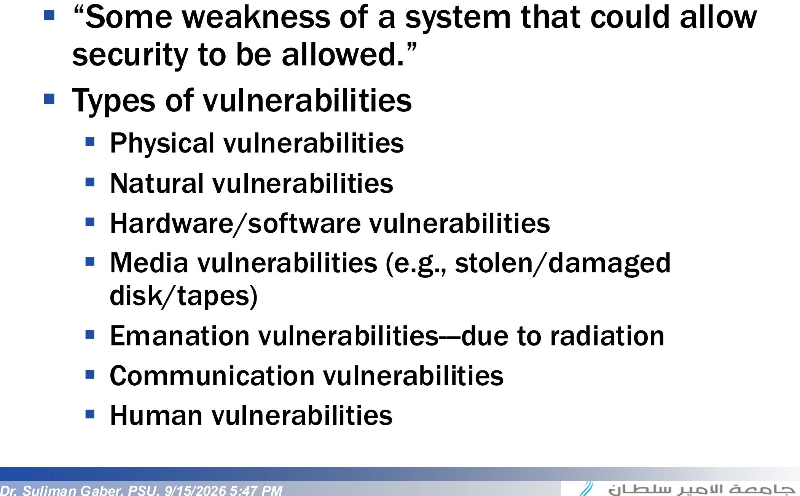
16
Exam weight ●○○ Low
- Vulnerabilities come from design flaws, misconfiguration, missing patches, weak processes and people.
How do the vulnerabilities manifest?
- The different types of vulnerabilities manifest themselves via several misuses:
- External misuse---visual spying, misrepresenting, physical scavenging
- Hardware misuse---logical scavenging, eavesdropping, interference, physical attack, physical removal
- Masquerading---impersonation, piggybacking attack, spoofing attacks, network weaving
- Pest programs---Trojan horse attacks, logic bombs, malevolent worms, virus attacks
- Bypasses---Trapdoor attacks, authorization attacks (e.g., password cracking)
- Active misuse---basic active attack, incremental attack, denial of service
- Passive misuse---browsing, interference, aggregation, covert channels
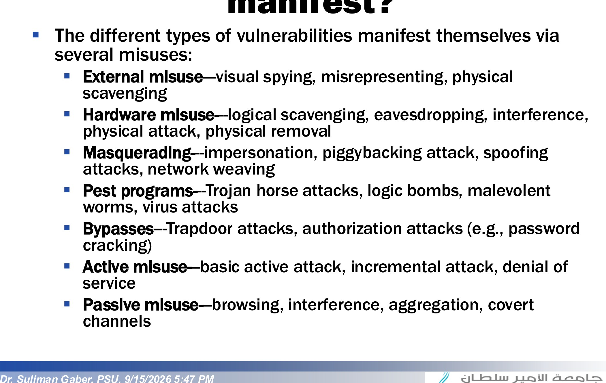
17
Exam weight ●○○ Low
Examples of Information Security Vulnerabilities
Ref: http://simplicable.com/new/the-big-list-of-information-security-vulnerabilities Information security vulnerabilities are weaknesses that expose an organization to risk.
- Through employees: Social interaction, Customer interaction, Discussing work in public locations, Taking data out of the office (paper, mobile phones, laptops), Emailing documents and data, Mailing and faxing documents, Installing unauthorized software and apps, Removing or disabling security tools, Letting unauthorized persons into the office (tailgating) , Opening spam emails, Connecting personal devices to company networks, Writing down passwords and sensitive data, Losing security devices such as id cards, Lack of information security awareness, Keying data
- Through former employees ---Former employees working for competitors, Former employees retaining company data, Former employees discussing company matters
- Through Technology ---Social networking, File sharing, Rapid technological changes, Legacy systems, Storing data on mobile devices such as mobile phones, Internet browsers
- Through hardware ---. Susceptibility to dust, heat and humidity, Hardware design flaws, Out of date hardware, Misconfiguration of hardware
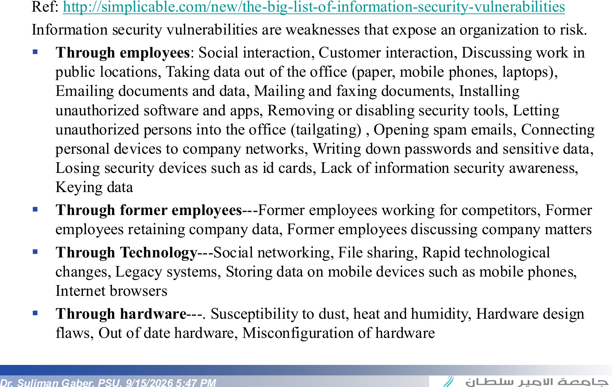
18
Exam weight ●○○ Low
Examples of Information Security Vulnerabilities (Cont.)
- Through software ---Insufficient testing, Lack of audit trail, Software bugs and design faults, Unchecked user input, Software that fails to consider human factors, Software complexity (bloatware), Software as a service (relinquishing control of data), Software vendors that go out of business or change ownership
- Through Network ---Unprotected network communications, Open physical connections, IPs and ports, Insecure network architecture, Unused user ids, Excessive privileges, Unnecessary jobs and scripts executing, Wifi networks
- Through IT Management ---Insufficient IT capacity, Missed security patches, Insufficient incident and problem management, Configuration errors and missed security notices, System operation errors, Lack of regular audits, Improper waste disposal, Insufficient change management, Business process flaws, Inadequate business rules, Inadequate business controls, Processes that fail to consider human factors, Overconfidence in security audits, Lack of risk analysis, Rapid business change, Inadequate continuity planning Lax recruiting processes
- Partners and suppliers ---Disruption of telecom services, Disruption of utility services such as electric, gas, water, Hardware failure, Software failure, Lost mail and courier packages, Supply disruptions, Sharing confidential data with partners and suppliers
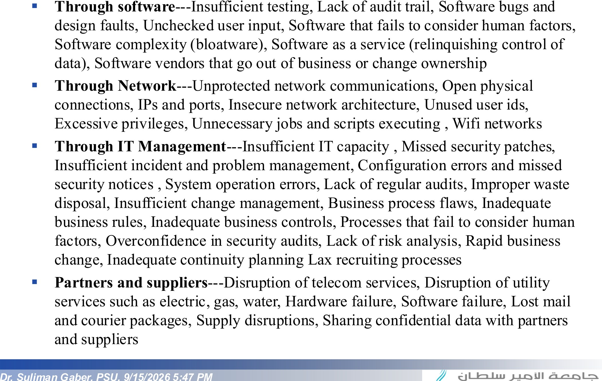
19
Exam weight ●○○ Low
Common Vulnerabilities and Exposures (CVE) List
- CVE defines a vulnerability as:
- "A weakness in the computational logic (e.g., code) found in software and hardware components that, when exploited, results in a negative impact to confidentiality, integrity, or availability. Mitigation of the vulnerabilities in this context typically involves coding changes, but could also include specification changes or even specification deprecations (e.g., removal of affected protocols or functionality in their entirety)."
- All vulnerabilities in the NVD have been assigned a CVE identifier and thus, abide by this definition.A CVE entry contains:
- CVE ID
- Description
- References
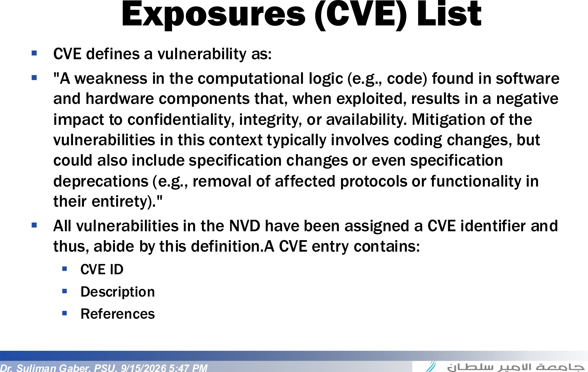
20
Exam weight ●●● High
- CVE: a public dictionary of known vulnerabilities, each with a CVE-ID (CVE-YEAR-NUMBER).
🎯 How this can come up · 1 question
MCQ
CVE provides:
Scores come from CVSS.
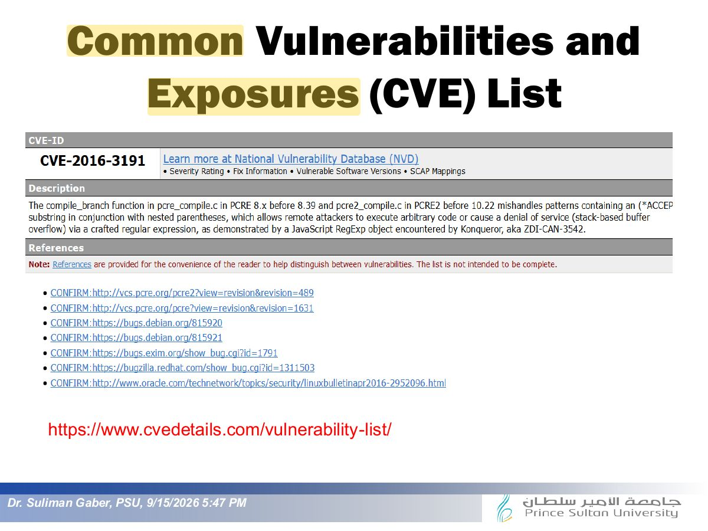
Exam weight ●○○ Low
Example on CVE
- CVE-2016-7280
- Cross-site scripting (XSS) vulnerability in Microsoft Edge allows remote attackers to inject arbitrary web script or HTML via unspecified vectors, aka "Microsoft Edge Information Disclosure Vulnerability," a different vulnerability than CVE-2016-7206.
- CVE-2016-3273
- The XSS Filter in Microsoft Internet Explorer 9 through 11 and Microsoft Edge does not properly restrict JavaScript code, which allows remote attackers to obtain sensitive information via a crafted web site, aka "Microsoft Browser Information Disclosure Vulnerability.“
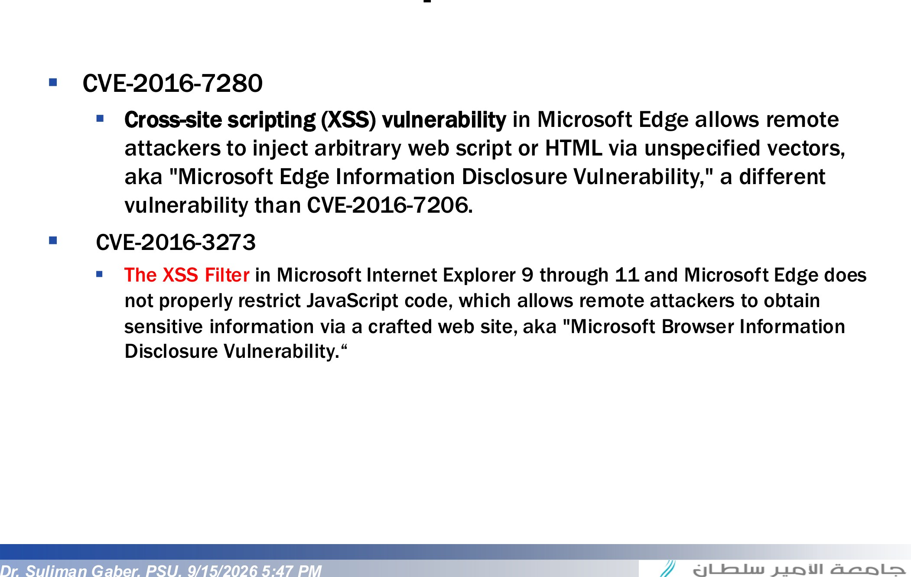
22
Exam weight ●○○ Low
Threat Modeling
- Structured approach to identifying, quantifying, and addressing threats
- Threat-modeling methods are used to create an abstraction of the system
- profiles of potential attackers, including their goals and methods
- a catalog of potential threats that may arise
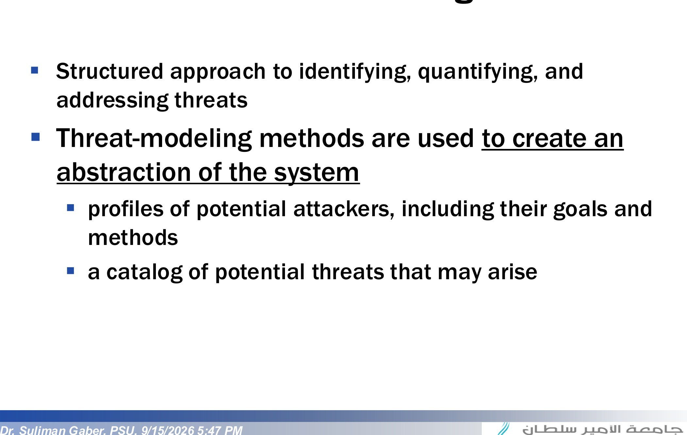
23
Exam weight ●○○ Low
- Threat modeling: identify what can go wrong in a system and how to address it, early in design.
12 threat models
- STRIDE and Associated Derivations
- PASTA
- LINDDUN
- CVSS
- Attack Trees
- Persona non Grata
- Security Cards
- hTMM
- Quantitative Threat Modeling Method
- Trike
- VAST Modeling
- OCTAVE
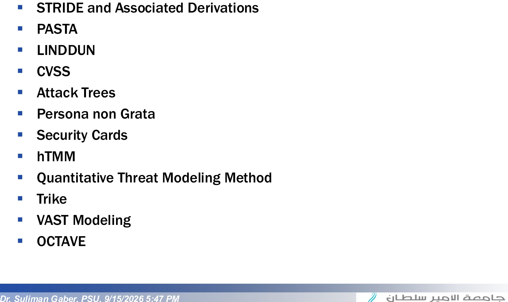
24
Exam weight ●○○ Low
★ Past exam
STRIDE and Associated Derivations
- STRIDE evaluates the system detail design. It models the in-place system.
- building data-flow diagrams (DFDs).
- STRIDE is used to identify system entities, events, and the boundaries of the system.
- Microsoft no longer maintains STRIDE, it is implemented as part of the Microsoft Security Development Lifecycle (SDL) with the Threat Modeling Tool
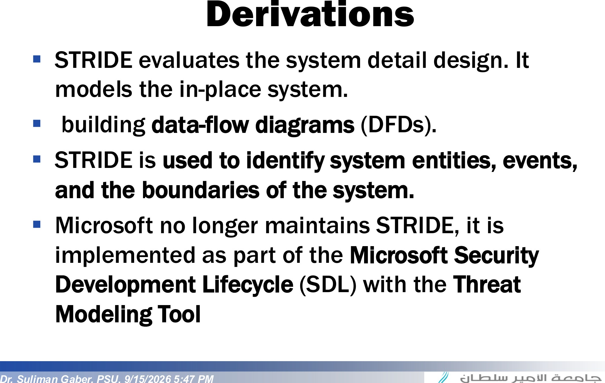
25
Exam weight ●●● High
- STRIDE: Spoofing, Tampering, Repudiation, Information disclosure, Denial of service, Elevation of privilege (each breaks one property).
Memory trickSpoofing↔authentication, Tampering↔integrity, Repudiation↔non-repudiation, Info disclosure↔confidentiality, DoS↔availability, EoP↔authorization.
Asked in a real exam
🎯 How this can come up · 2 questions
MCQ
In STRIDE, "Tampering" violates:
Correct: Integrity.
MCQ
Microsoft’s threat-modeling method for an app is:
Correct: STRIDE.
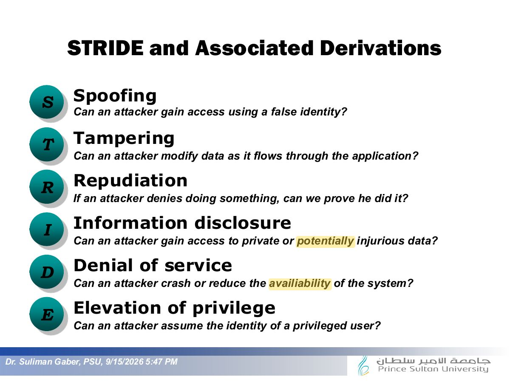
Exam weight ●○○ Low
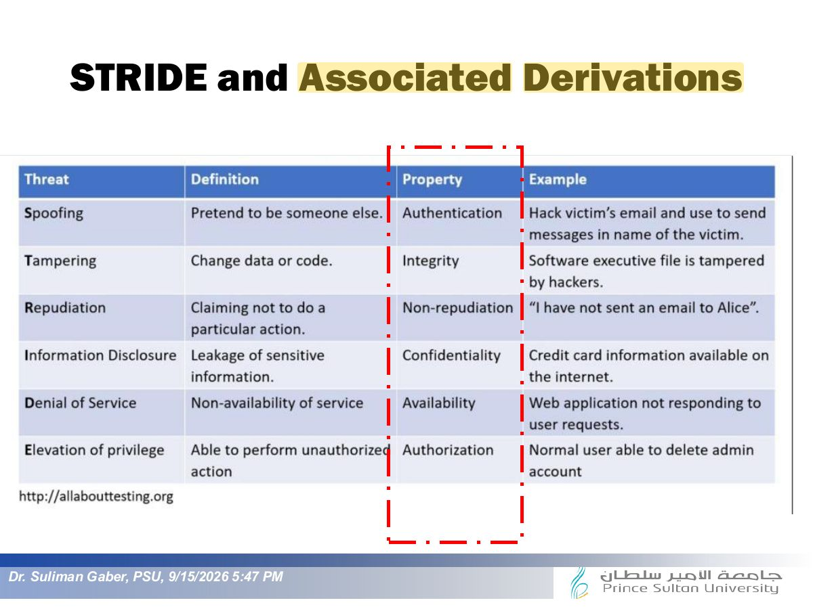
Exam weight ●○○ Low
PASTA
- The Process for Attack Simulation and Threat Analysis (PASTA)
- is a risk-centric threat-modeling framework developed in 2012.
- It contains seven stages, each with multiple activities
- PASTA aims to bring business objectives and technical requirements together.
- This method elevates the threat-modeling process to a strategic level by involving key decision makers and requiring security input from operations, governance, architecture, and development.
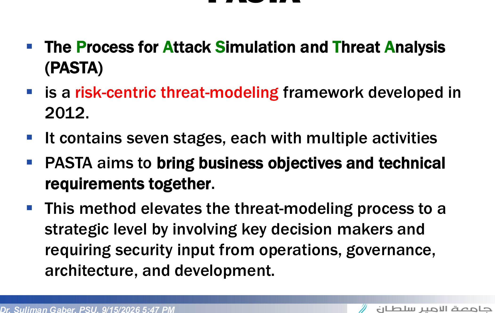
28
Exam weight ●○○ Low
- PASTA: Process for Attack Simulation and Threat Analysis: a 7-stage, risk-centric method.
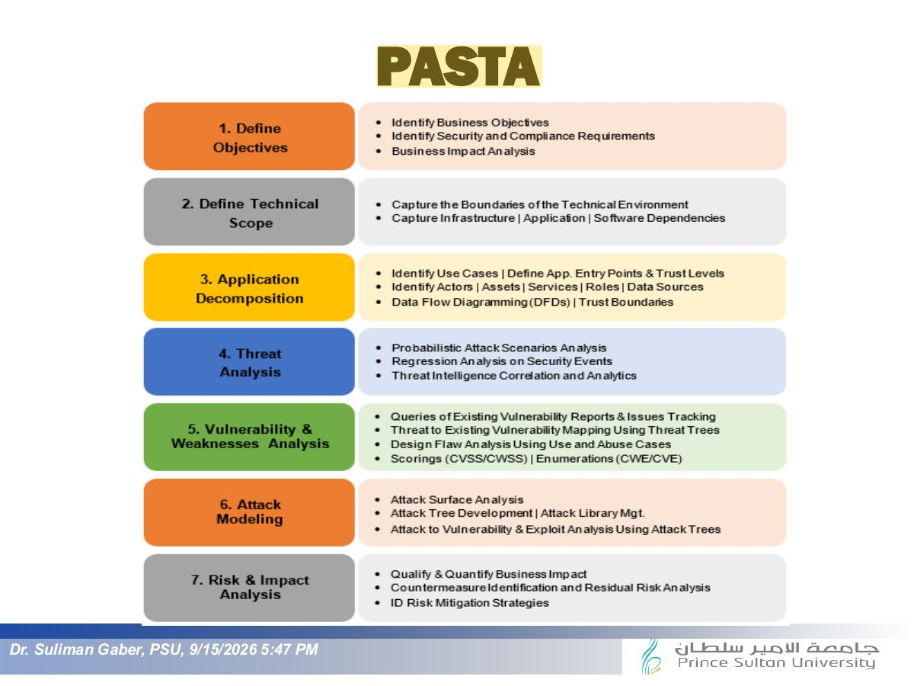
Exam weight ●○○ Low
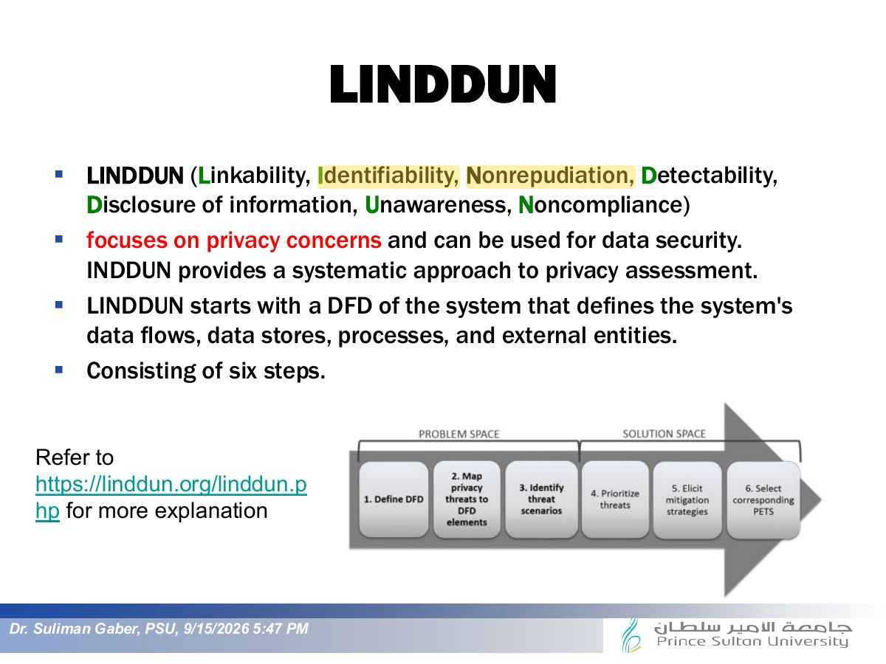
Exam weight ●●● High
- LINDDUN: privacy threats (Linkability, Identifiability, Non-repudiation, Detectability, Disclosure, Unawareness, Non-compliance).
🎯 How this can come up · 1 question
MCQ
Which method focuses on PRIVACY threats?
Correct: LINDDUN.
LINDDUN
- LINDDUN
- Linkability:Being able to sufficiently distinguish whether 2 IOI (items of interest) are linked or not.
- Examples are: anonymous letters written by the same person, web page visits by the same user, entries in two databases related to the same person, people related by a friendship link, etc.
- Identifiability: Being able to sufficiently identify the subject within a set of subjects
- Examples are: identifying the reader of a web page, the sender of an email, the person to whom an entry in a database relates, etc.
- Nonrepudiation:
- Typical non-repudiation examples exist in the context of anonymous online voting systems, and whistleblowing systems where plausible deniability is required.
- Linkability:Being able to sufficiently distinguish whether 2 IOI (items of interest) are linked or not.
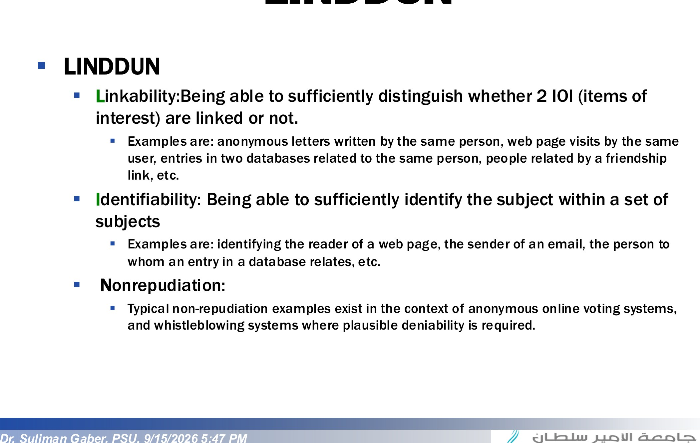
31
Exam weight ●○○ Low
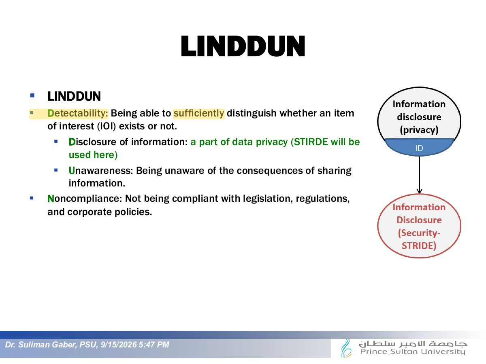
Exam weight ●○○ Low
Common Vulnerability Scoring System (CVSS)
- The Common Vulnerability Scoring System (CVSS) captures the principal characteristics of a vulnerability and produces a numerical severity score.
- The CVSS provides users a common and standardized scoring system within different cyber and cyber-physical platforms.
- A CVSS score can be computed by a calculator that is available online.
- A CVSS score is derived from values assigned by an analyst for each metric.
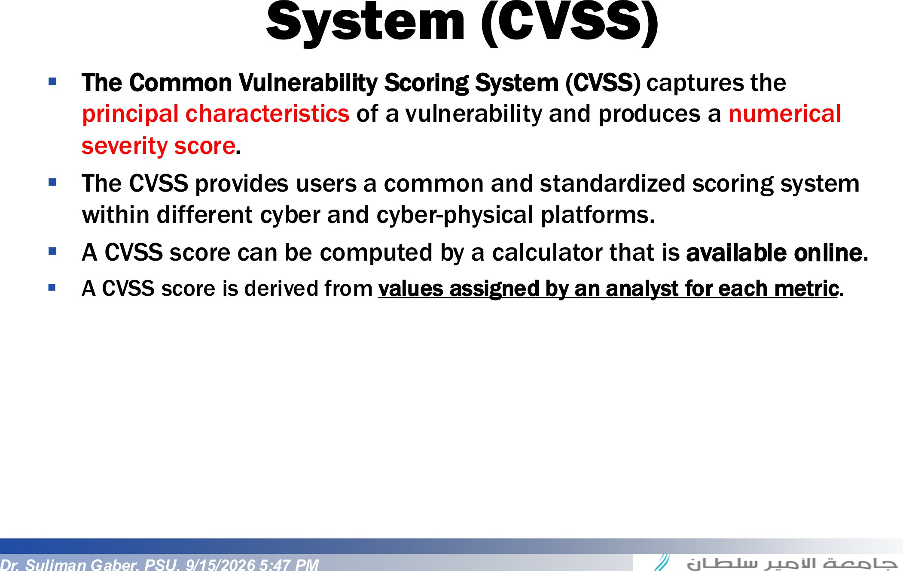
33
Exam weight ●○○ Low
- CVSS: scores a vulnerability’s severity 0–10 (base, temporal, environmental metrics).
Common Vulnerability Scoring System (CVSS)
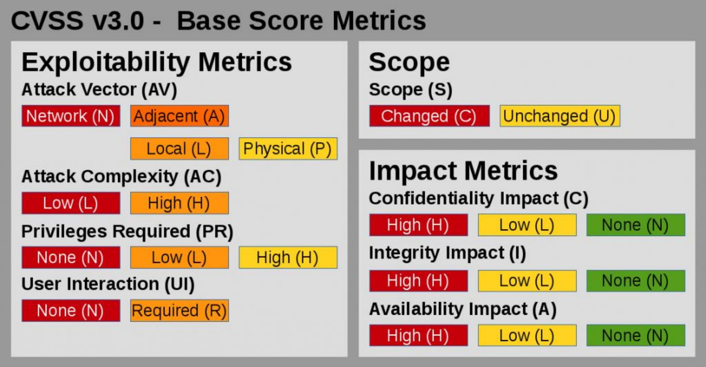
34
Exam weight ●○○ Low
Threats Analysis (Attack Tree)
Decompose threats into individual, testable conditions using attack trees.
Attack Trees
- Hierarchical decomposition of a threat.
- Root of tree is adversary’s goal in the attack.
- Each level below root decomposes the attack into finer approaches.
- Child nodes are ORed together by default.
- Special notes may indicate to AND them.
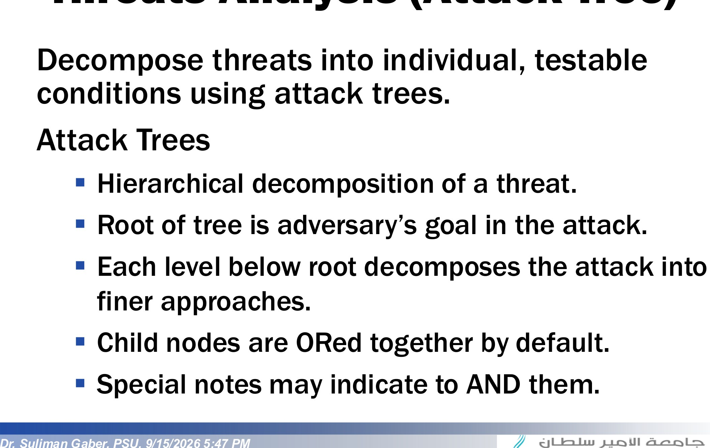
35
Exam weight ●○○ Low
- Attack tree: root = attacker’s goal, children = ways to achieve it (AND/OR nodes).
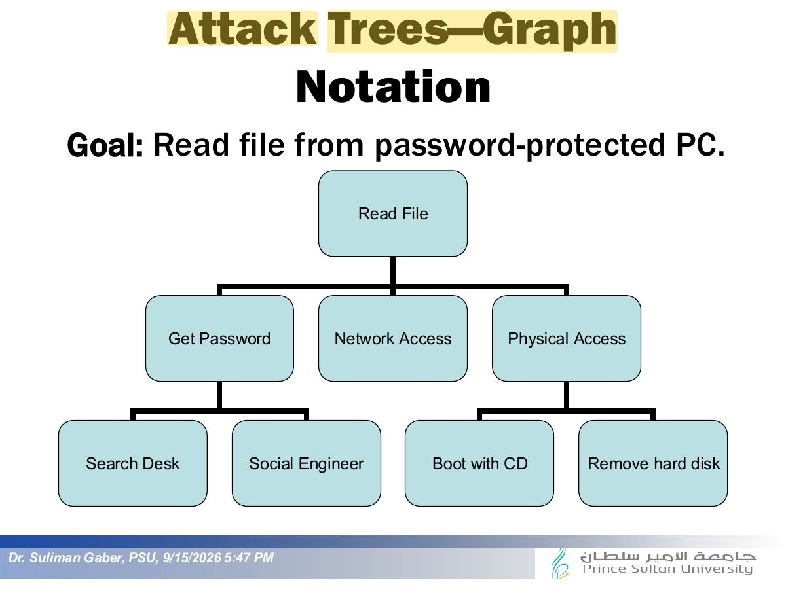
Exam weight ●○○ Low
Attack Trees — Text Notation
Goal: Read message sent from one PC to another.
- Convince sender to reveal message. 1.1 Blackmail. 1.2 Bribe.
- Read message when entered on sender’s PC. 1.1 Visually monitor PC screen. 1.2 Monitor EM radiation from screen.
- Read message when stored on receiver’s PC. 1.1 Get physical access to hard drive. 1.2 Infect user with spyware.
- Read message in transit. 1.1 Sniff network. 1.2 Usurp control of mail server.
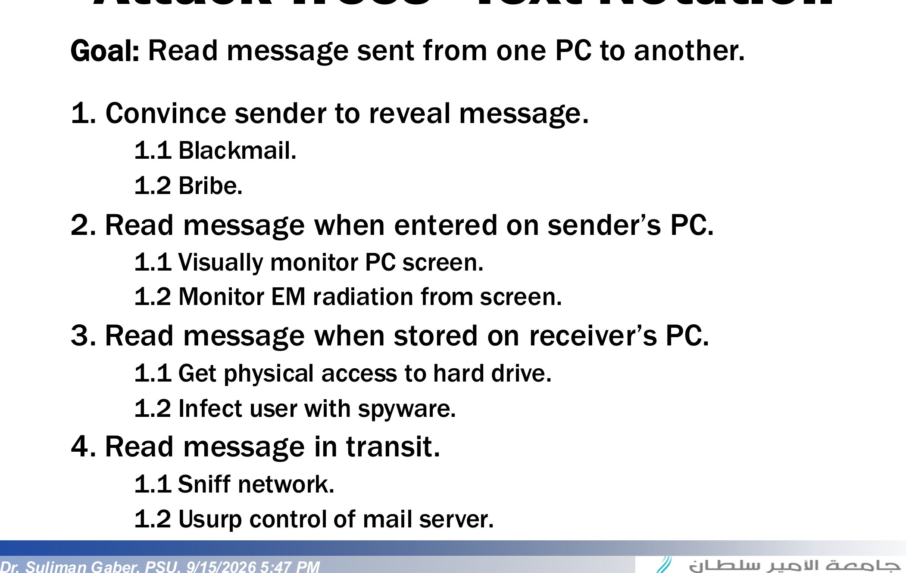
37
Exam weight ●○○ Low
Attack Trees
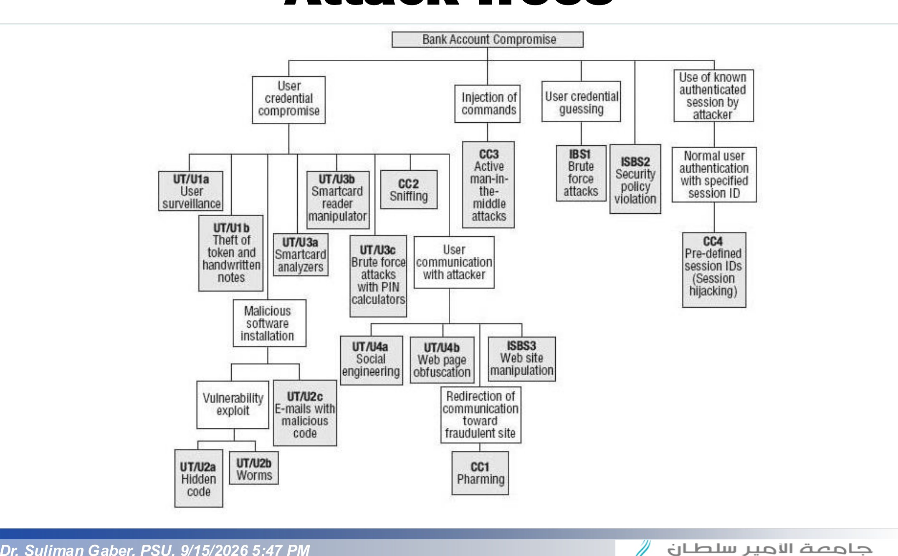
38
Exam weight ●○○ Low
Persona non Grata
- Persona non Grata (PnG) focuses on the motivations and skills of human attackers.
- Users act as models to try the possible misuse of the system and forces analysts to view the system from an unintended-use point of view.
- PnG can help visualize threats from the counterpart side, which can be helpful in the early stages of the threat modeling.
- The idea is to introduce a technical expert to a potential attacker of the system and examine the attacker's skills, motivations, and goals.
- This analysis helps the expert understand the system's vulnerabilities from the point of view of an attacker.
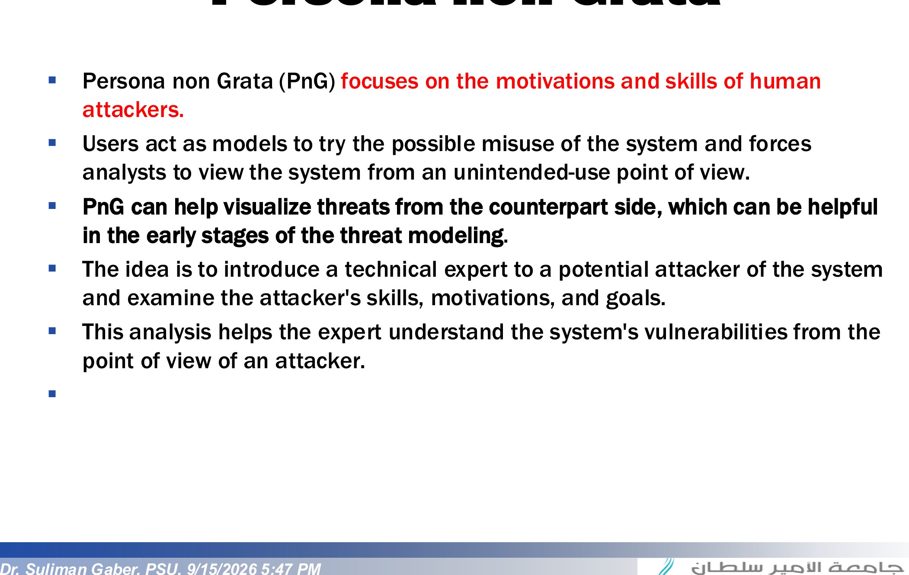
39
Exam weight ●○○ Low
Security Cards
- Security Cards identify unusual and complex attacks.
- It is a kind of brainstorming technique. With help from a deck of cards, analysts can answer questions about an attack, such as
- Who might attack?
- Why might the system be attacked?
- What assets are of interest?
- How can these attacks be implemented?"
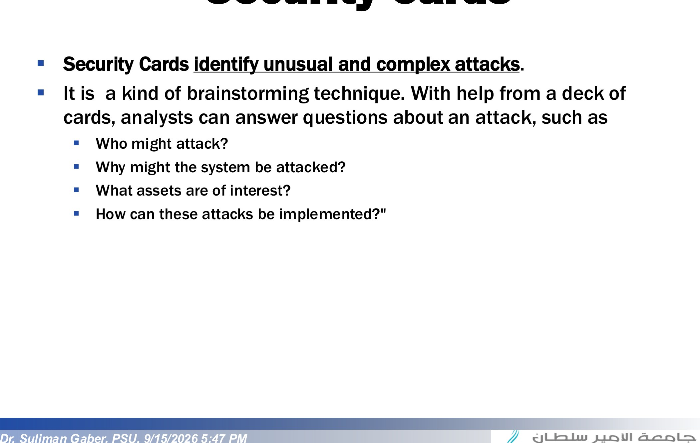
40
Exam weight ●○○ Low
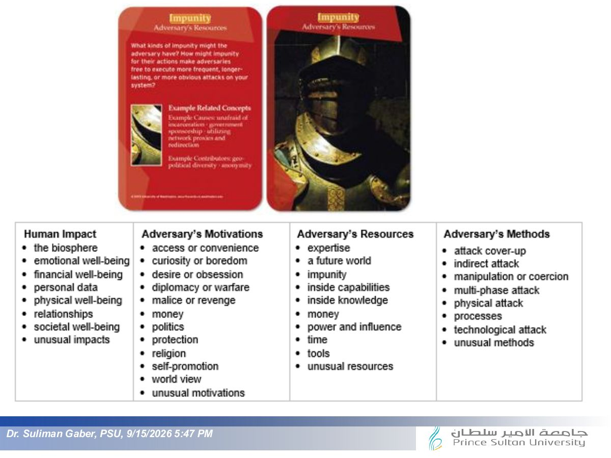
Exam weight ●○○ Low
hTMM
- The Hybrid Threat Modeling Method (hTMM) was developed by the Software Engineering Institute in 2018.
- It consists of a combination of SQUARE (Security Quality Requirements Engineering Method), Security Cards, and PnG activities.
- The targeted characteristics of the method include no false positives, no overlooked threats, a consistent result regardless of who is doing the threat modeling, and cost effectiveness.
- The main steps of the method are
- Identify the system to be threat-modeled.
- Apply Security Cards based on developer suggestions.
- Remove unlikely PnGs (i.e., there are no realistic attack vectors).
- Summarize the results using tool support.
- Continue with a formal risk-assessment method.
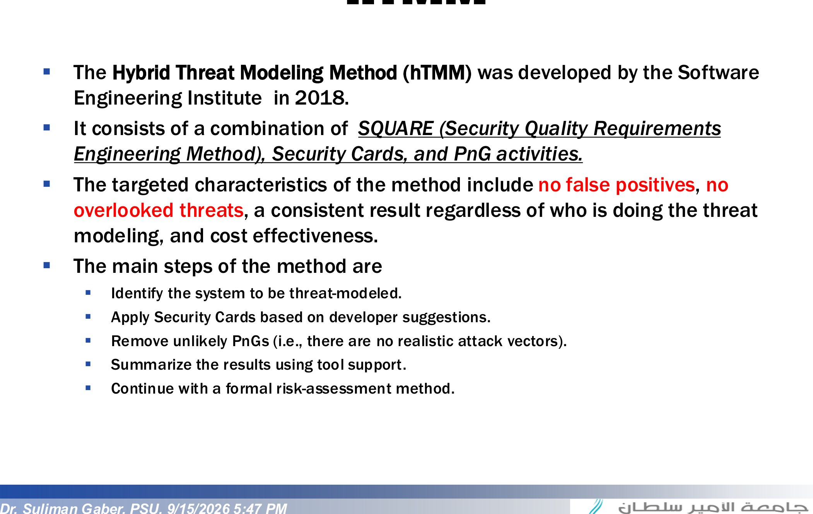
42
Exam weight ●○○ Low
Quantitative Threat Modeling Method
- This hybrid method consists of attack trees, STRIDE, and CVSS methods applied in synergy.
- It aims to address a few urgent issues with threat modeling for cyber-physical systems that had complex interdependences among their components.
- The first step of the Quantitative Threat Modeling Method (Quantitative TMM) is to build component attack trees for the five threat categories of STRIDE.
- To show the dependencies among attack categories and low-level component attributes.
- After that, the CVSS method is applied and scores are calculated for the components in the tree.
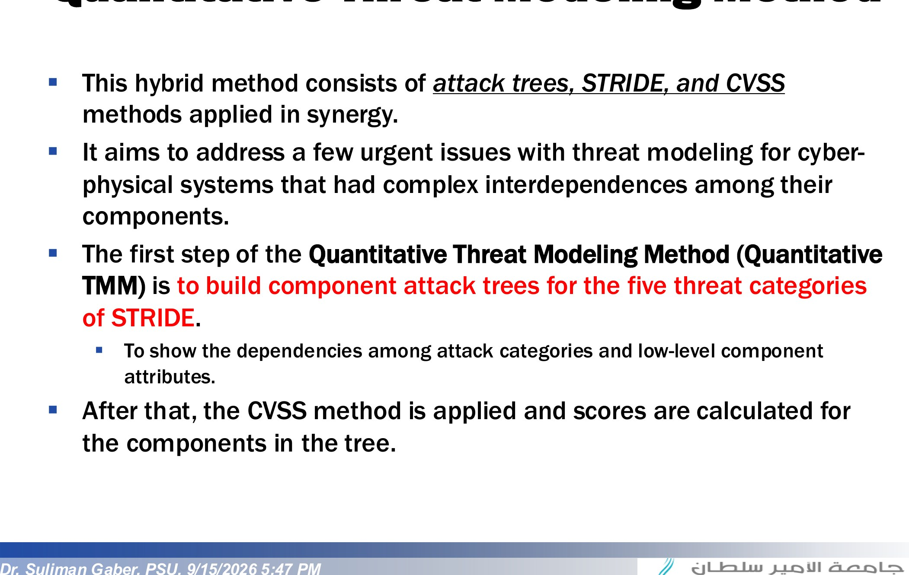
43
Exam weight ●○○ Low
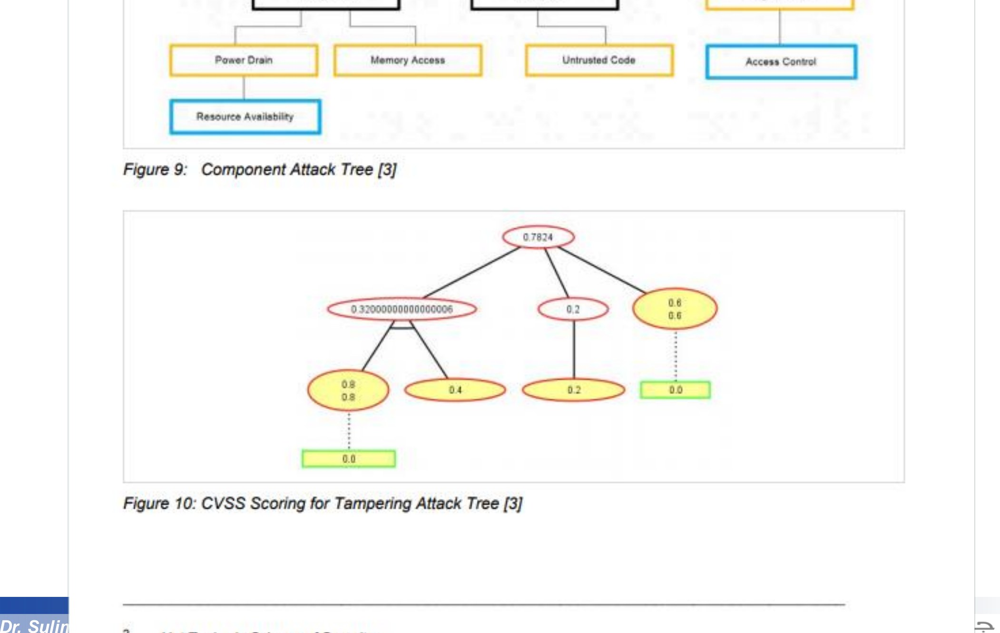
44
Exam weight ●○○ Low
Trike
- Trike was created as a security audit framework that uses threat modeling as a technique.
- It looks at threat modeling from a risk-management and defensive perspective.
- Trike steps
- Define the system: system's actors, assets, intended actions, and rules.
- actor-asset-action matrix:.
- Each cell has four parts (CRUD), and associated rules.
- data flow diagram (DFD) is built. Each element is mapped to a selection of actors and assets. Iterating through the DFD.
- the analyst identifies threats, which fall into one of two categories: elevations of privilege or denials of service.
- Each discovered threat becomes a root node in an attack tree.
- To assess the risk of attacks that may affect assets through CRUD,
- Trike uses a five-point scale for each action, based on its probability.
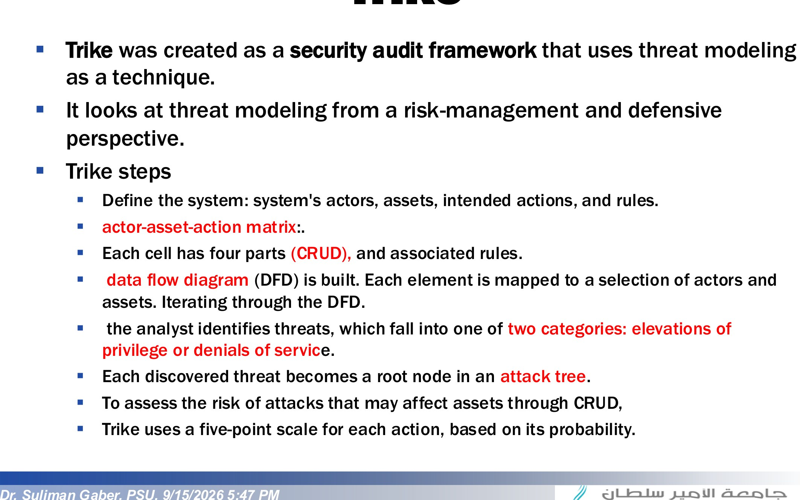
45
Exam weight ●○○ Low
Visual, Agile, and Simple Threat modeling (VAST)
- The founding principle is that, in order to be effective, threat modeling must scale across
- the infrastructure and entire DevOps portfolio, integrate seamlessly into an Agile environment and
- provide actionable, accurate, and consistent outputs for developers, security teams, and senior executives alike.
- VAST: Application Threat Models: For application developer to investigate DFD & Process flow
- map the features and communications of an application in much the same way as developers and architects think about the application during an SDLC design session.
- VAST: Operational Threat Models: for infrastructure team to investigate the running of operation and the data flow information is presented from an attacker
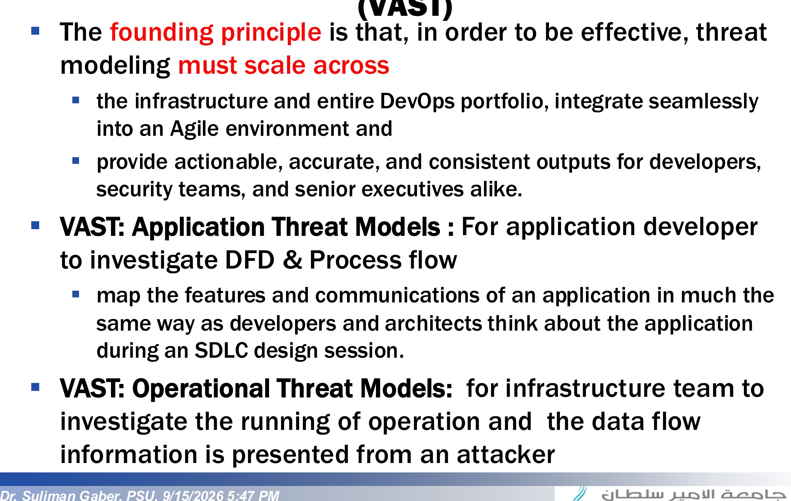
46
Exam weight ●○○ Low
OCTAVE
- The Operationally Critical Threat, Asset, and Vulnerability Evaluation (OCTAVE) method is a risk-based strategic assessment and planning method for cybersecurity.
- OCTAVE focuses on assessing organizational risks and does not address technological risks.
- Its main aspects are operational risk, security practices, and technology.
- OCTAVE has three phases.
- Build asset-based threat profiles. (This is an organizational evaluation.)
- Identify infrastructure vulnerability. (This is an evaluation of the information infrastructure.)
- Develop a security strategy and plans. (This is an identification of risks to the organization's critical assets and decision making.)
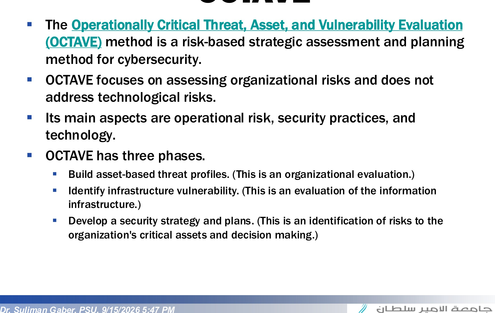
47
Exam weight ●○○ Low
- OCTAVE: organizational, self-directed risk assessment of operational risk (Carnegie Mellon).
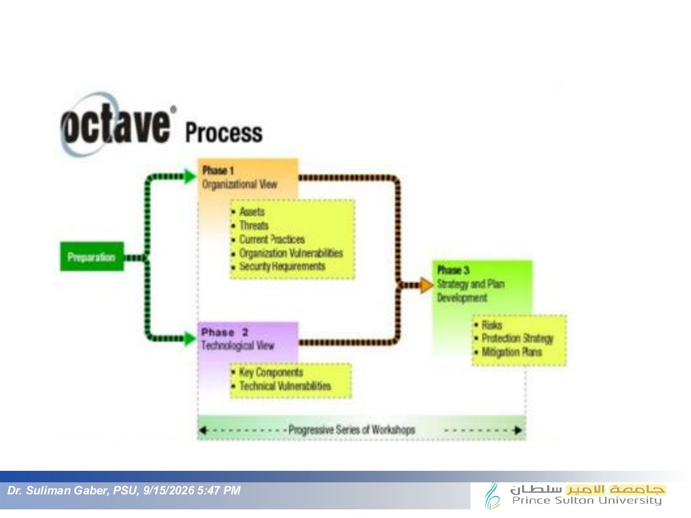
Exam weight ●○○ Low
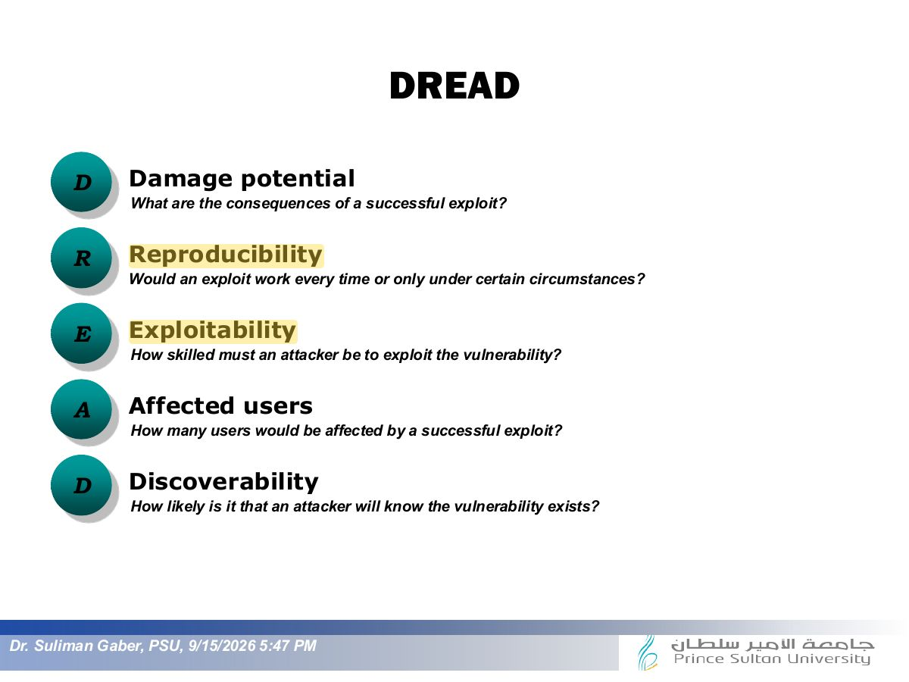
Exam weight ●●● High
- DREAD rates threats: Damage, Reproducibility, Exploitability, Affected users, Discoverability.
🎯 How this can come up · 1 question
MCQ
The "R" in DREAD stands for:
Correct: Reproducibility.
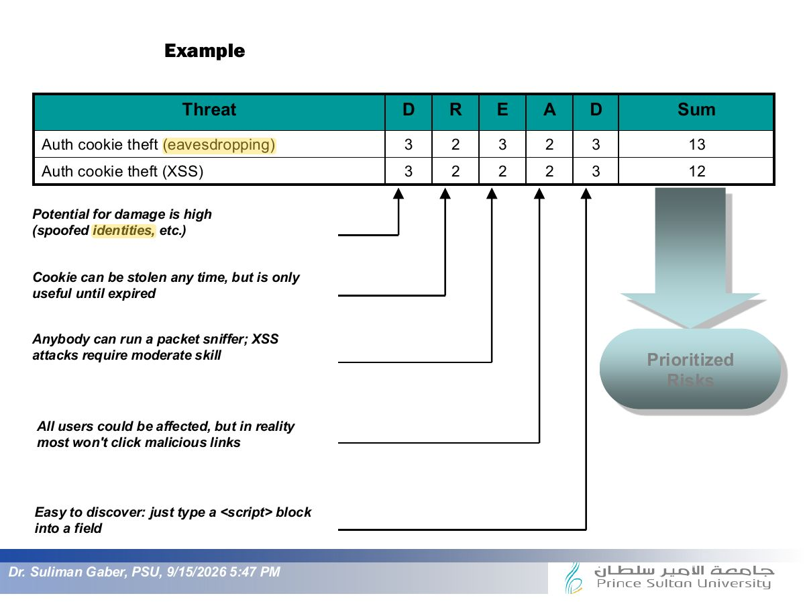
Exam weight ●○○ Low
51
Exam weight ●○○ Low
Threat/Vulnerability Pairs
- A threat/vulnerability pair occurs when a threat exploits a vulnerability.
- The vulnerabilities provide a path for the threat that results in a harmful event or a loss.
- It’s important to know that both the threat and the vulnerability must come together to result in a loss.
- Vulnerabilities depend on your organization. For example, if you’re hosting public facing servers, the servers have several potential weaknesses. However, if you don’t have any public - facing servers, there aren’t any vulnerabilities for the organization in this area.
- Thus, the risk is zero.
52
Exam weight ●○○ Low
- Threat/vulnerability pair: a threat matters only if a matching vulnerability exists (and vice versa).
Exam weight ●○○ Low
No slides match this filter.